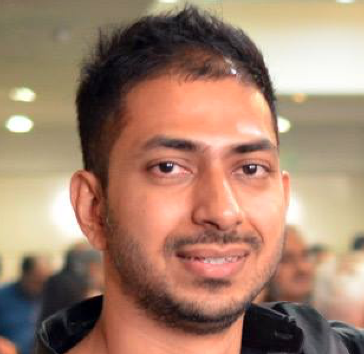

Chanakya
I am an independent software consultant. I work on a few non profit software projects and some industrial startup software projects. I am also a member of LiberalDart.com where I have a comunity of members that work pro bono on non-profit projects. Most of our work at liberaldart.com is offline and website is still work in progress by the software team. Please feel free to reach out to me on social media.
